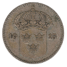
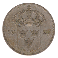
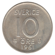
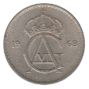
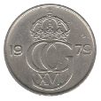

Ten Öre
Oscar II (1874-1876)
Oscar II (1880-1907)
1887 EB
 1903 EB
1903 EB
1907 EB
Gustav V (1909-1942)
1911 W
1914 W
 1915 W
1919 W
 1927 W
1929 G
1930 G
1931 G
1936 G
1941 G
1942 G
Gustav V (1920-1947)
1920 W
1946 TS
1947 TS
Gustav V (1942-1950)
1942 G
1943 G
1944 G
1945 G
1945 TS
1946 TS
1947 TS
1948 TS
1949 TS
1950 TS
Gustav VI Adolf (1952-1962)
1952 TS
1954 TS
1955 TS
1956 TS
1957 TS
1958 TS
1959 TS
1960 TS
1961 TS
 1961 U
Gustav VI Adolf (1962-1973)
1962 U
1963 U
1964 U
1965 U
1966 U
1967 U
 1968 U
1969 U
1970 U
1971 U
1972 U
1973 U
Carl XVI Gustaf (1976-1991)
1977 U
1978 U
 1979 U
1980 U
1981 U
1982 U
1983 U
1984 U
1985 U
1986 D
1987 D
1988 D
1989 D
1990 D
Back to Sweden
Back to Home